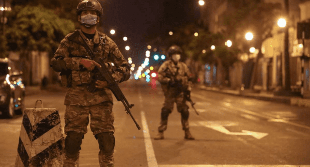

La Republica
- POLITICA
- ECONOMIA
- SOCIEDAD
- MUNDO
- DEPORTES
- ESPECTACULOS
ACTUALIDAD
Domingo 16 de mayo: ¿Qué actividades no estarán prohibidas en Lima y Callao?

Gobierno central informó que, hasta el 30 de mayo, Lima y Callao se encontrarán bajo la clasificación de
riesgo muy alto por la COVID-19, esto debido a un ligero descenso de infectados en la región.
En ese sentido, los domingos serán de inmovilización social obligatoria, dejando solo permitido la atención
a farmacias, boticas y restaurantes, todos por delivery.
En el caso de toque de queda, el Ejecutivo indicó que la restricción iniciará desde las 10 de la noche hasta
las 4 de la mañana del día siguiente.
¿Qué servicios están disponibles durante el toque de queda de los domingos?
Durante la inmovilización social obligatoria de los domingos solo está permitido la atención en farmacias,
boticas y restaurantes. Esto solo será vía delivery.
El delivery de restaurantes solo será desde 04:00 a.m. hasta las 11:00 p.m. de lunes a domingo.
Delivery de farmacias y boticas serán las 24 horas
Coronavirus en Perú
Gobierno central informó que, hasta el 30 de mayo, Lima y Callao se encontrarán bajo la clasificación de riesgo muy alto por la COVID-19, esto debido a un ligero descenso de infectados en la región.
En ese sentido, los domingos serán de inmovilización social obligatoria, dejando solo permitido la atención a farmacias, boticas y restaurantes, todos por delivery.
En el caso de toque de queda, el Ejecutivo indicó que la restricción iniciará desde las 10 de la noche hasta las 4 de la mañana del día siguiente.
¿Qué servicios están disponibles durante el toque de queda de los domingos?
Durante la inmovilización social obligatoria de los domingos solo está permitido la atención en farmacias, boticas y restaurantes. Esto solo será vía delivery.
El delivery de restaurantes solo será desde 04:00 a.m. hasta las 11:00 p.m. de lunes a domingo.
Delivery de farmacias y boticas serán las 24 horas.
¿A que hora es el toque de queda hoy según el nivel de alerta?
Nivel de alerta moderado: De lunes a domingo desde las 23:00 horas hasta las 4:00 horas.
Nivel de alerta alto: De lunes a domingo desde las 22:00 horas hasta las 4:00 horas.
Nivel de alerta muy alto: De lunes a domingo desde las 21:00 horas hasta las 4:00 horas.
Nivel de alerta extremo: De lunes a sábado desde las 21:00 horas hasta las 4:00 horas del día ylos domingos desde las 4:00 horas hasta las 4:00 horas del día siguiente.
La Republica:16/05/21